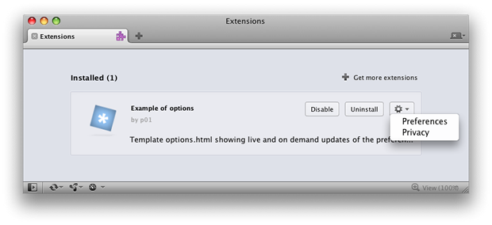
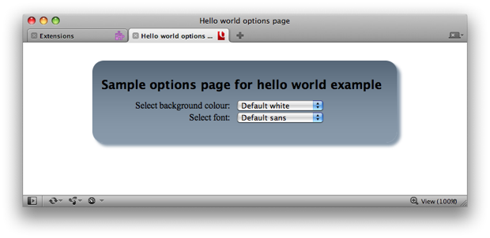
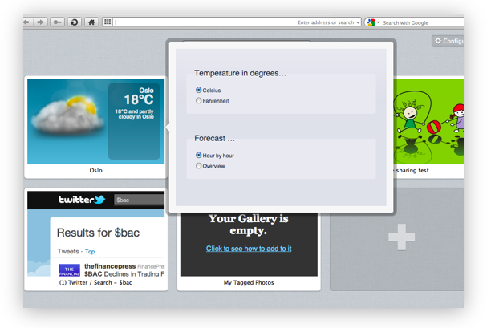
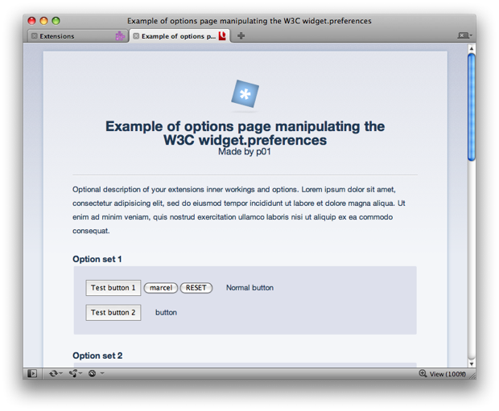

Opera extensions: options page
From Opera 15 onward, Opera 11 & 12’s extension format is no longer supported, and instead, we’ve switched to Chromium’s extension model. Check out our new documentation for developing extensions for Opera 15 and higher and start building your own extensions.
Introduction
This article details how to use a new feature of Opera extensions called the options page. This is a page in the extension containing preferences the user can set, defined in an options.html file in the root of the extension directory.
The way it works is quite simple—when you install an extension, if Opera finds an options.html file in the extension, it makes a "Preferences" option available for that extension in the Extension Manager (Tools > Extensions > Manage Extensions)—see Figure 1.

Figure 1: The new Opera extensions options page functionality, reachable through the Extension Manager.
Exactly what is put on the options page is entirely up to you as the extension author, but in general you should include form elements that allow the end user to choose different options and then save the changes to window.localStorage, or preferably widget.preferences, so they can then be easily applied to the extension.
In this article we will take you through the basics of creating your own options page, and then present a sample extension containing an options page template that you are free to use in your own extensions.
Building a basic options page
This section will walk you through the basics of creating an options page. Have a look at the code inside our sample options.html page as you go through this section.
- First of all, choose an extension you'd like to add an options page to. For this example we are using the Hello world extension, which creates a button that, when clicked, brings up a popup window containing the text "Hello World". If you've not already done so, read Saying hello world to Opera extensions! to find out how this extension works.
- Unpack the extension.
- Create a new file inside the root of the extension directory and name it
options.html. - Inside this file add a basic HTML document structure.
- The next thing to add to this file is some form elements to allow you to choose different options—or preferences—for your extension. Again, these can be anything you like, but for this extension we will do something really simple and provide form elements for changing the background colour of the hello world bubble, and changing the font of the message.
Our sample options.html page looks like this:
<!DOCTYPE html>
<html>
<head>
<title>Hello world options page</title>
<style>
<!-- CSS omitted for brevity -->
</style>
</head>
<body>
<div id="wrapper">
<h1>Sample options page for hello world example</h1>
<form>
<ul>
<li><label for="colour">Select background colour:</label>
<select name="colour" id="colour" />
<option value="white">Default white</option>
<option value="red">Red</option>
<option value="yellow">Yellow</option>
<option value="blue">Blue</option>
<option value="green">Green</option>
</select>
</li>
<li><label for="font">Select font:</label>
<select name="font" id="font" />
<option value="sans">Default sans</option>
<option value="serif">Serif</option>
<option value="mono">Monospace</option>
</select>
</li>
</ul>
</form>
</div>
</body>
</html>Try the first version of the updated hello world example. Go to the Extension Manager and choose the "Preferences" option for this extension, accessed by clicking on the cogwheel button. You should then be sent to the options page, as seen in Figure 2.

Figure 2: Our sample options page.
The trouble is ... it won't do anything right now! Now we need to add some JavaScript to communicate the changes back to the extension and put them in to effect. This is what the next section will deal with.
Wiring it up with JavaScript
As a next step, we will add the following script into options.html to allows us to store the preferences for the background colour and font for our Hello world extension.
<script>
var bgColor = document.getElementById( 'colour' ),
font = document.getElementById( 'font' );
bgColor.addEventListener( 'change', function() {
widget.preferences.backgroundColor = this.value;
}, false );
font.addEventListener( 'change', function() {
widget.preferences.font = this.value;
}, false );
if ( widget.preferences.backgroundColor && widget.preferences.font ) {
bgColor.value = widget.preferences.backgroundColor;
font.value = widget.preferences.font;
}
</script>
Lets go through this step by step:
- We grab references to each
<select>menu via their IDs and bind listeners for thechangeevent. - When the user sets a preference, the
changeevent fires and we store the value of that preference in thewidget.preferencesstorage object. We'll explain that in more detail later on. - We also check to see if those values have been set previously, to accurately report the state of preferences for our extension.
We also need to add some script inside popup.html, the file that causes the popup to appear when you click the hello world button. This script reads the values that are stored in widget.preferences by the script in options.html, and updates the styles inside the popup window.
<script>
window.addEventListener( 'DOMContentLoaded', function() {
if (widget.preferences.backgroundColor && widget.preferences.font ) {
document.body.style.backgroundColor = widget.preferences.backgroundColor;
document.querySelector( 'h1' ).style.fontFamily = widget.preferences.font;
}
}, false );
</script>
Quite simply, we check widget.preferences to see if the user has set any preferences, then assign those values to the relevant style objects. The changes are instant—you don't even need to submit the form or reload the extension to change the preferences! If no preferences have been set, the default CSS styles take effect.
Try the final version of the updated hello world example to see this code in action.
The widget.preferences interface is exactly the same as that of the window.localStorage object, except that it doesn't have the same size limitations as window.localStorage. In addition, widget.preferences default values can be declared in the <preference> elements of your config.xml file, as seen in The preference Element and its Attributes section of the Widget Packaging and Configuration specification. Therefore, when the script in our options.html template sets a preference on the widget.preferences object, a storage event is fired on the active documents of the extension (especially the background process). By listening to the storage events, the background process of your extension can react immediately to any change in widget.preferences.
A special pane for speed dial extensions
For speed dial extensions, the options page is also accessible by right-clicking on the speed dial, and selecting "Preferences". This will, instead of opening a new tab, call out a special preferences pane showing the options page. You can see an example in Figure 3.

Figure 3: The seperate pane showing the options page for a speed dial extension.
Presenting our template
Now we've looked at a simple example, it is time to look at our sample options page template. The template is contained inside a sample extension that doesn't really do anything, and simply serves to show off the extension options page functionality.
Install the extension, then select the "Preferences" option from the Extension Manager—you'll go to the extension's options page, which looks like Figure 4.

Figure 4: Our options page template.
Explaining the template
When you open the options page for the extension, the script goes through any <select> and <input> elements with a name attribute and sets their value to that of the corresponding item in widget.preferences. You can therefore feel free to remove or add form elements from the markup of the options.html page, and it will continue to work just fine.
In addition, the script automatically populates the title of the page and the name and author of the extension. It picks these up from the widget object, window.widget, which gets them from the config.xml file.
By default, the preference values are hardcoded into the markup of the options.html file. When the user changes the value of any of the form elements, the preference values are stored immediately in the widget.preferences object.
When the options page is loaded and the document is ready, the script goes through the different form elements and populates them with the values from widget.preferences, if there is one, or falls back to the default hardcoded values.
To handle preferences with multiple values, e.g. checkbox groups and multiple selects, we join/split the multiple values using a variable called glue in the script of our options.html template: a simple \n. If your extension requires advanced preferences, we recommend writing your own options.html page to better cater for your specific use cases.
Summary
This concludes our tour of the Opera extensions options page functionality. Feel free to grab our template and use it in your own projects.
This article details how to use a new feature of Opera extensions called the options page. This is a page in the extension containing preferences the user can set, defined in anChris Mills

Chris Mills is a web technologist, open standards evangelist and education agitator, currently working at Opera Software in the developer relations team. He spends most of his time writing articles about web standards for dev.opera.com and other publications (such as .net mag and A List Apart), giving talks at universities and industry conferences, and lobbying universities to improve their web education courses. He believes that education is the answer to everything, but in particular he is passionate about using education to improve the overall content quality, accessibility, usability and future-viability of the Web.
He is the creator of the Opera Web standards curriculum, contributor to the WaSP InterACT project, and coauthor of InterACT with web standards: A Holistic Approach to Web Design. In August 2011, he also accepted the position of co-chair of the newly-formed Web Education Community Group.
Outside work he is a heavy metal drummer, proud father of three and lover of good beer.
This article is licensed under a Creative Commons Attribution 3.0 Unported license.
Comments
The forum archive of this article is still available on My Opera.
-

How come the checkbox "check1" in the template is checked by default and not the other two?
-

I'm not sure actually - there doesn't seem to be anything inside the HTML, CSS, or JS that would make ti checked by default. I suspect that is what you are asking ;-) Have you looked at the code in detail?
-

It was not me who wrote the code, BTW - I can try to ask the guy who did.
-

Is it possible to store sets with different values of preferences for the same fields so that a user can set up various settings for later use instead of having to change each of the fields manually again?
-
@QuHno sure, although there is no magic to do it for you. The way you would do it is read all the settings, and store that as an object, e.g. using JSON. You can then use that to restore a named profile - and make some code to add a new profile, etc...
-

@QuHno: As Charles said, the best way to do that is probably with JSON objects. So you'd have profile objects containing the relevant setting details, then convert them to strings to store them.
-

How can I change the name of file for options from options.html to something else? I'm almost sure I saw it somewhere, but now I can't find it anywhere.
-

That is a good question, Martin.
-

Is there a convenient way to display pictures on an external web-server in an options page?
-
The nonsense.oex file does seem to be a proper ZIP file. I've renamed the extension, but my ZIP programs don't recognise it.
-
@drworm Opera won't recognize my extensions as a proper ZIP file.
No new comments accepted.mehdus
Monday, December 12, 2011
Chris Mills
Monday, December 12, 2011
Chris Mills
Monday, December 12, 2011
QuHno
Wednesday, May 9, 2012
I am asking because the next version of my extension has 25+ different input elements in the settings form ...
Charles McCathieNevile
Wednesday, May 9, 2012
Daniel Davis
Thursday, May 10, 2012
E.g.
// Store profile object
var mySettings = { // Profile settings };
widget.preferences.profile1 = JSON.stringify(mySettings);
// Get profile object
var mySettings = JSON.parse(widget.preferences.profile1);
Martin Kadlec
Sunday, May 13, 2012
Name
Sunday, July 8, 2012
Given that Opera appears to convert everything into xhtml... it stands to wonder why index.xhtml works but options.xhtml doesn't.
Of course, only reason I'm converting to xhtml is because I'm bored. I happen to agree that the "options" page should always be options.*
Hmm... options.html does not seem to localize either. "locales/en/options.html"
Christoph
Saturday, July 28, 2012
Looks like a security restriction, right?
drworm
Saturday, October 6, 2012
Stephan Robert Sevenyoln
Friday, November 9, 2012